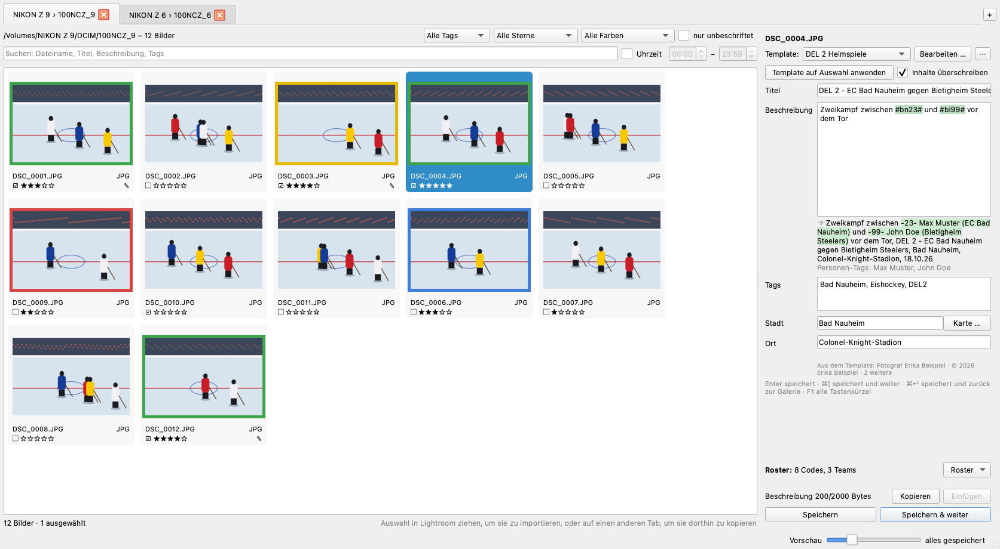
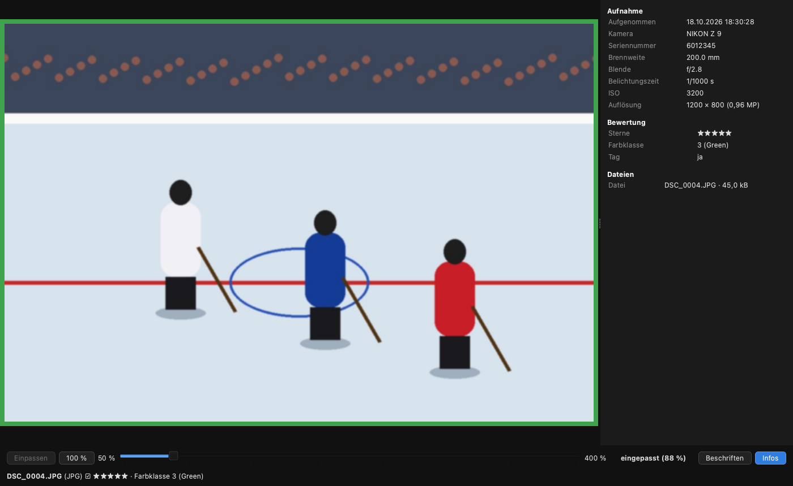
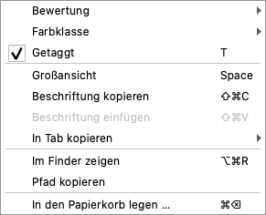
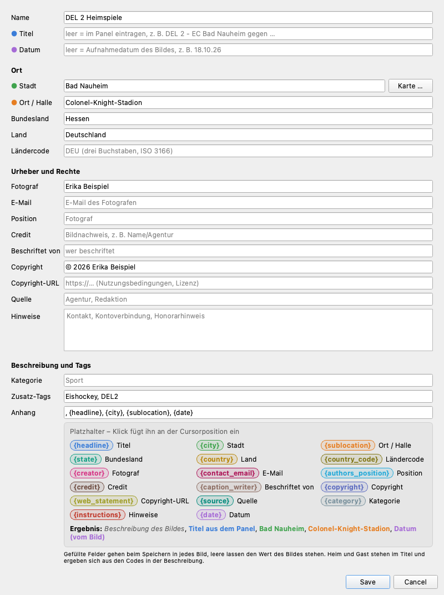
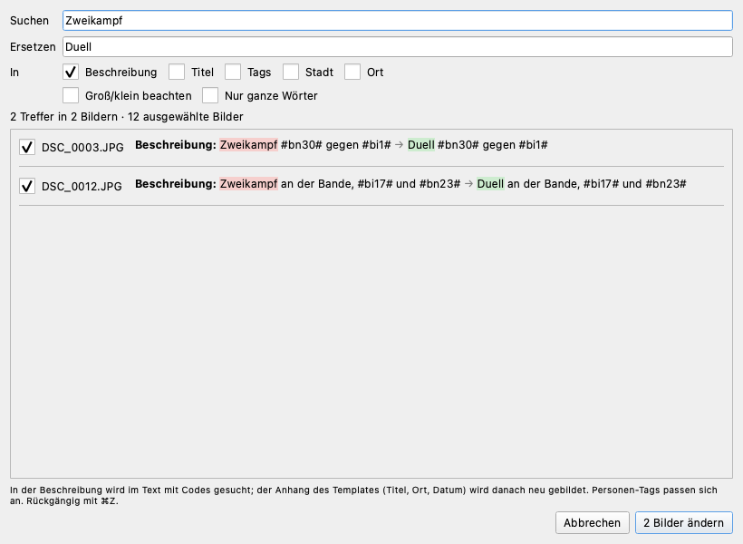
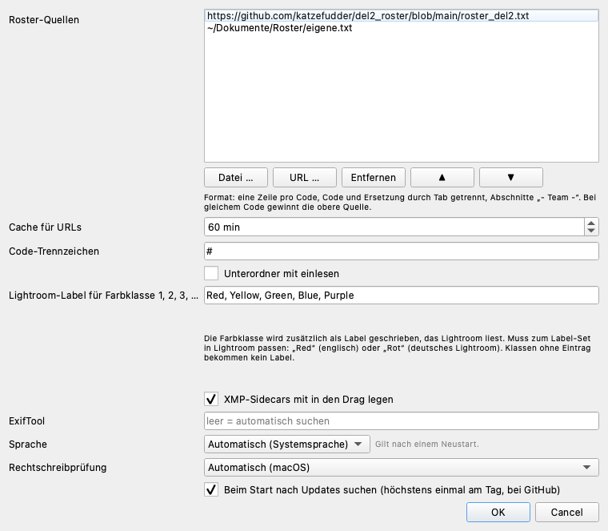
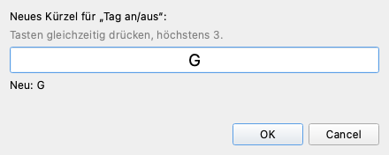

Fotos sichten, bewerten und beschriften,
bevor sie in Lightroom importiert werden
Captioner ist das Werkzeug zwischen Speicherkarte und Lightroom. Du sichtest die Fotos eines Spiels, bewertest sie, wählst aus und beschriftest sie. Danach ziehst du die Auswahl in Lightroom, und Lightroom übernimmt beim Import Titel, Beschreibung, Stichwörter, Sterne und Farbe.
Das Besondere sind die Codes: Statt „-23- Max Muster (EC Bad Nauheim)“
tippst du #bn23#. Captioner schlägt die Spieler beim Tippen vor, setzt beim
Speichern den vollen Namen ein und trägt die Person automatisch in die Tags ein. Die Codes
stehen in Roster-Dateien, die ein Team einmal pflegt und alle nutzen.
Ein typischer Ablauf:
DEL 2 - EC Bad Nauheim gegen Bietigheim Steelers.Deine Dateien sind sicher. RAW-Dateien (NEF, CR2, ARW …) verändert Captioner nie; alles kommt in eine XMP-Datei daneben. In JPG, DNG und TIFF wird über eine Kopie geschrieben, die erst dann die Originaldatei ersetzt, wenn die Bilddaten nachweislich unverändert sind. Mehr dazu unter Übergabe an Lightroom.
Captioner läuft auf Macs mit Apple-Chip (M1 und neuer) ab macOS 26. Es gibt zwei Wege:
Beim ersten Start meldet macOS eventuell, dass die App nicht geöffnet werden kann, weil sie nicht von Apple notarisiert ist. Dann einmal Systemeinstellungen → Datenschutz & Sicherheit öffnen und unten auf „Dennoch öffnen“ klicken. Danach startet die App normal.
ExifTool, das Captioner zum Lesen und Schreiben der Metadaten braucht, ist eingebaut.
Den Installer Captioner-…-x64-setup.exe starten. Er installiert für alle Benutzer
oder, ohne Administratorrechte, nur für dich. Wahlweise legt er ein Desktop-Symbol an und den
Eintrag „Mit Captioner öffnen“ im Kontextmenü von Ordnern und Laufwerken.
Windows SmartScreen warnt beim ersten Start, weil der Installer nicht signiert ist: „Weitere Informationen“ → „Trotzdem ausführen“.
Windows-Unterschiede: Überall, wo hier ⌘ steht, gilt unter Windows Strg; ⌥ ist Alt. Einige Kürzel sind anders belegt (siehe Tastenkürzel). Die Rechtschreibprüfung gibt es nur auf dem Mac.
Captioner fragt beim Start höchstens einmal am Tag nach einer neuen Version. Gibt es eine, erscheint unten rechts „Update … verfügbar“; ein Klick öffnet die Download-Seite. Von Hand: Hilfe → Nach Updates suchen ….
Captioner folgt der Systemsprache (Deutsch oder Englisch); einstellen lässt sie sich in den Einstellungen. Hilfe → Anleitung (PDF) öffnet diese Anleitung in der Sprache der Oberfläche; die englische Fassung liegt mit bei.

Die Menüs stehen auf dem Mac oben in der Menüleiste des Bildschirms: Captioner (Über, Einstellungen, Beenden), Ablage (Ordner öffnen, Neu einlesen, Bilder umbenennen, Tab schließen, Tastenkürzel anpassen; unter Windows heißt es Datei), Bearbeiten (Rückgängig, Wiederholen, Suchen und Ersetzen), Template, Roster und Hilfe (Anleitung, Tastenkürzel, Website, Updates).
Es gibt mehrere Wege:
Gelesen werden JPG, NEF und andere RAW-Formate, DNG und TIFF.
Enthält ein Ordner selbst keine Bilder, aber Unterordner mit Bildern (die Karte selbst
oder DCIM), öffnet jeder Bildordner einen eigenen Tab. Zieht man zwei Karten aufs
Fenster, sind also sofort alle Bildordner beider Karten offen. Bei mehr als acht Ordnern fragt
Captioner vorher nach.
Wer lieber alles in einem Tab hat: In den Einstellungen „Unterordner mit einlesen“ einschalten.
Klicken wählt ein Bild aus, ⌘-Klick und ⇧-Klick wählen mehrere. Mit den Pfeiltasten bewegst du dich durch die Galerie, Pos1 und Ende springen zum ersten bzw. letzten Bild. ⌘A wählt alle, ⌘D hebt die Auswahl auf. Die Größe der Kacheln stellt der Regler „Vorschau“ unten rechts ein.
Leertaste oder ein Doppelklick auf eine Kachel öffnet das Bild groß; nochmal Leertaste, Esc oder ⌘W schließt. Mit ← und → blätterst du. Sterne, Farbklassen und Tag setzt du hier mit denselben Tasten wie in der Galerie.

Zoom:
Zoom und Ausschnitt bleiben beim Blättern erhalten. So vergleichst du die Schärfe einer Serie an derselben Stelle. 100 % ist die volle Auflösung der Vorschau in der Datei, bei Nikon-NEFs die volle Sensorauflösung.
Unter dem Bild stehen Dateiname, Tag, Sterne und Farbklasse, ganz unten Kamera, Objektiv, Brennweite, Belichtungszeit, Blende, ISO und die Dateien des Bildes, z. B. NIKON Z 9 · NIKKOR Z 70-200mm f/2.8 VR S · 200 mm · 1/500 s · f/2.8 · ISO 64 · DSC_0001.NEF.
Info-Panel: Rechts stehen EXIF und IPTC des Bildes: Aufnahmezeit mit Hundertsteln, Kamera und Seriennummer, Objektiv, Belichtung, GPS, die Beschriftung und die zugehörigen Dateien. „Infos“ blendet das Panel aus und ein; Captioner merkt sich das.
Beschriften in der Großansicht: I oder „Beschriften“ holt das Beschriftungs-Panel neben das Bild und setzt den Cursor in die Beschreibung. ⌘N / ⌘B speichern und zeigen das nächste bzw. vorige Bild groß. Beim Tippen lösen Ziffern, T, Z, +, - und die Leertaste nichts aus; ein Klick aufs Bild gibt die Tasten wieder an die Großansicht.
| Was | macOS | Windows |
|---|---|---|
| Farbklasse 1–8 · entfernen | 1–8 · 0 | 1–8 · 0 |
| Sterne 1–5 · entfernen | ⌘1–⌘5 · ⌘0 | Strg+1–5 · Strg+0 |
| Tag an/aus · an · aus | T · + · - | T · + · - |
Alles wirkt auf die Auswahl, also auch auf viele Bilder auf einmal, und lässt sich mit ⌘Z zurücknehmen.

Ein Rechtsklick auf eine Kachel öffnet ein Menü für die Auswahl. Klickst du auf ein Bild, das nicht ausgewählt ist, wird zuerst nur dieses ausgewählt (wie im Finder).
Darin: Bewertung und Farbklasse (Untermenüs, der aktuelle Wert ist abgehakt), Getaggt, Großansicht, Beschriftung kopieren und einfügen, In Tab kopieren, Im Finder zeigen (Windows: im Explorer), Pfade kopieren und In den Papierkorb legen. Rechts neben jedem Punkt steht sein Tastenkürzel.
Die Filter gelten für alle Tabs; beim Wechsel wirken sie auf den neuen Tab.
<Anlass> - <Heim> gegen <Gast>, z. B.
DEL 2 - EC Bad Nauheim gegen Bietigheim Steelers. Weicht der Titel davon ab,
warnt das Panel, speichert aber trotzdem. Ein Bild ohne Titel übernimmt den zuletzt
gespeicherten. Auch im Titel gehen Codes, z. B. DEL 2 - #bn# gegen #bi#.Ein Code steht zwischen zwei Rauten: #bn23#. Schon beim Tippen von
#bn öffnet sich eine Liste mit den passenden Spielern; die beiden Teams aus dem
Titel stehen oben. Pfeiltasten und Enter übernehmen einen Vorschlag.
Eingabe
Zweikampf zwischen #bn23# und #bi99# vor dem Tor
Gespeichert wird
Zweikampf zwischen -23- Max Muster (EC Bad Nauheim) und -99- John Doe (Bietigheim Steelers) vor dem Tor, DEL 2 - EC Bad Nauheim gegen Bietigheim Steelers, Bad Nauheim, Colonel-Knight-Stadion, 18.10.26
Tags
Max Muster, John Doe, Eishockey, DEL2
Bekannte Codes sind im Text grün hinterlegt, unbekannte rot. Ein unbekannter Code verhindert das Speichern, damit nie ein Code statt eines Namens in der Datei landet. Gespeichert wird immer der aufgelöste Text; den Text mit Codes merkt sich Captioner, damit du ihn später wieder bearbeiten kannst.
| Was | macOS | Windows |
|---|---|---|
| Speichern | Enter | Enter |
| Speichern und nächstes Bild | ⌘N oder ⌘] | Strg+M oder Alt+] |
| Speichern und voriges Bild | ⌘B oder ⌘[ | Alt+B oder Alt+[ |
| Speichern und zurück zur Galerie | ⌘Enter | Strg+Enter |
| Nächstes · voriges Bild ohne Speichern | ⌘⇧N · ⌘⇧B | Strg+⇧N · Strg+⇧B |
Speichern geht sofort; geschrieben wird im Hintergrund. Rechts unten steht „alles gespeichert“, sobald alle Dateien geschrieben sind. Unter der Beschreibung zählt Captioner die Bytes: IPTC erlaubt höchstens 2000 Bytes für die Beschreibung. Ist ein Feld zu lang, wird es rot angezeigt und Speichern ist gesperrt.
Sind mehrere Bilder ausgewählt, gelten Titel, Tags, Stadt und Ort für alle. Die Beschreibung wird nur übernommen, wenn du sie im Feld geändert hast; sonst behält jedes Bild seine eigene.
⌘⇧C (oder „Kopieren“ im Panel) kopiert Titel, Beschreibung, Tags, Stadt und Ort, auch was noch nicht gespeichert ist. ⌘⇧V (oder „Einfügen“) fügt in alle ausgewählten Bilder ein und speichert. Die Codes werden je Bild neu aufgelöst, und der Anhang bekommt das Datum des Zielbildes.
Tippfehler in der Beschreibung sind rot unterstrichen, mit denselben Wörterbüchern wie Mail oder Pages. Codes und Namen aus dem Roster gelten nicht als Fehler. Ein Rechtsklick zeigt Vorschläge, „Ins Wörterbuch aufnehmen“ (gilt dann auch in anderen Apps) und „Ignorieren“. Die Sprache stellst du in den Einstellungen ein.
Ein Template enthält alles, was für ein Spiel oder eine Halle immer gleich ist. Du wählst es oben im Panel; Bearbeiten … daneben öffnet es.

18.10.26 eintragen; passt er nicht zum
Aufnahmedatum eines Bildes, warnt das Panel orange.DEU).
„Karte …“ füllt Stadt, Ort, Bundesland und Land auf einmal.Eishockey, DEL2.{headline} (Titel), {city}, {sublocation},
{date}, {creator}, {copyright}. Ein Klick auf einen
Platzhalter in der Legende fügt ihn ein, „Ergebnis“ zeigt den fertigen Anhang. Leere
Platzhalter fallen samt Komma weg.Gefüllte Felder schreibt Captioner beim Speichern in jedes Bild. Leere Felder lassen den Wert des Bildes stehen, z. B. Fotograf und Copyright, die die Kamera schon eingetragen hat.
„Template auf Auswahl anwenden“ (⌘⌥A) setzt Titel, Ort, Rechte und Tags für alle ausgewählten Bilder. Mit „Inhalte überschreiben“ (voreingestellt) wird dabei alles auf das Template zurückgesetzt und vorhandene Beschreibungen geleert; ohne Haken bleiben die Beschreibungen stehen.
Im Menü Template und unter ⋯ neben der Auswahl:
, {headline}, {city}, {sublocation}, {date}. Der Dialog öffnet sich zum Prüfen;
gespeichert wird erst mit OK..toml-Datei aufs Fenster ziehen). Sie
bleibt verknüpft: Änderungen landen wieder in genau dieser Datei.Ein Roster ist eine Textdatei mit einer Zeile pro Code: Code, ein Tabulator,
dann der Text, der eingesetzt wird. Zeilen wie - EC Bad Nauheim - sind
Abschnittsköpfe für ein Team.
- EC Bad Nauheim - bn23 -23- Max Muster (EC Bad Nauheim) bn9 -9- Tom Platzhalter (EC Bad Nauheim) - Bietigheim Steelers - bi99 -99- John Doe (Bietigheim Steelers) - Teams - bn EC Bad Nauheim bi Bietigheim Steelers
Personen schreibt man als -Nummer- Name (Team); so erkennt Captioner sie und
trägt den Namen in die Tags ein. Team-Codes wie bn lassen sich im Titel nutzen.
Roster kommen aus Internetadressen (URL), aus Dateien auf dem Rechner oder aus beidem.
Roster → Roster-Datei hinzufügen … nimmt eine Datei dazu, oder du ziehst die
.txt aufs Fenster. In den Einstellungen lassen sich Quellen hinzufügen, entfernen und
sortieren. Hat derselbe Code in zwei Quellen verschiedene Texte, gewinnt die obere, und
Captioner zeigt den Konflikt an. Ohne Internet nimmt Captioner die zuletzt geladene Fassung
einer URL. „Roster neu laden“ holt alle Quellen frisch.
Roster → Roster bearbeiten … öffnet einen Editor für die Roster-Dateien auf dem Rechner. Tabulatoren sind blau hinterlegt. Zeilen, die beim Laden ignoriert würden (Leerzeichen statt Tabulator, fehlender Text) und widersprüchliche doppelte Codes sind rot markiert und unten aufgelistet; ein Klick springt zur Zeile. ⌘F sucht, ⌘S speichert. Gespeichert wird in der Zeichenkodierung der Datei, also auch passend für unter Windows erstellte Roster.
Karte … neben „Stadt“ (im Panel und im Template) öffnet eine OpenStreetMap-Karte:
Colonel-Knight-Stadion, dann Enter. Die Karte springt hin und füllt
Stadt und Ort. Bei mehreren Treffern den passenden wählen.Jeder gewählte Ort wird gemerkt. Beim Tippen in „Stadt“ schlägt Captioner gemerkte Orte vor, auch ohne Internet. Ohne Verbindung zeigt der Dialog statt der Karte einen Hinweis; Stadt und Ort kannst du trotzdem eintragen.
Hat der gewählte Ort Koordinaten, schreibt Captioner sie beim Speichern als GPS-Position in die Datei; Lightroom zeigt sie im Karten-Modul. Das passiert nur bei Bildern ohne GPS: Hat die Kamera selbst GPS aufgezeichnet, bleibt es unangetastet. Der Hinweis unter „Ort“ sagt, was passiert.
Für die Karte nutzt Captioner OpenStreetMap. Gesucht wird erst auf Enter, höchstens einmal pro Sekunde; dabei gehen der Suchtext bzw. der angeklickte Punkt an openstreetmap.org.
Bearbeiten → Suchen und Ersetzen … (⌘⌥F) ersetzt Text in den ausgewählten Bildern, ohne Auswahl in allen angezeigten.

#bn9# → #bn10#
tauscht also den Spieler samt Personen-Tag. Ein ausgeschriebener Name wird auch gefunden, wenn
dort ein Code steht.⌘Z nimmt die letzte Änderung zurück: Sterne, Farbklasse, Tag, gespeicherte Beschriftung, Einfügen, Template anwenden, Suchen und Ersetzen, auch für viele Bilder auf einmal. ⌘⇧Z stellt sie wieder her. Das Menü Bearbeiten zeigt, was zurückgenommen wird. In einem Textfeld gilt ⌘Z für das gerade Getippte.
Nicht rückgängig zu machen sind der Papierkorb (Bilder holst du dort im Finder bzw. Explorer zurück) und das Umbenennen.
Die ausgewählten Bilder per Drag & Drop ins Lightroom-Raster ziehen. Lightroom öffnet den Import-Dialog und übernimmt Titel, Beschreibung, Stichwörter, Sterne, Farbmarkierung, Ort, Rechte und GPS.
Vor dem Ziehen schreibt Captioner alles, was noch aussteht. Bilder, deren Metadaten nicht sicher gespeichert sind (Schreibfehler, oder eine beschriftete RAW-Datei ohne XMP-Datei), werden nicht mitgezogen; Captioner sagt, welche.
| Datei | wohin |
|---|---|
| NEF, CR2, ARW, … (RAW) | In die XMP-Datei daneben, <name>.xmp.
Die RAW-Datei wird nie verändert. Eine vorhandene XMP-Datei (auch .XMP aus einem
anderen Programm) wird fortgeschrieben. |
| JPG, DNG, TIFF | In die Datei selbst (IPTC, XMP, EXIF). Geschrieben wird in eine Kopie, die das Original erst ersetzt, wenn die Bilddaten unverändert sind. |
Beim Ziehen gehen die XMP-Dateien mit (abschaltbar in den Einstellungen).
Bilder aus der Galerie auf den Reiter eines anderen Tabs ziehen (kurz darüber halten wechselt hinein, dann kannst du sie auch in dessen Galerie fallen lassen), oder im Kontextmenü In Tab kopieren. Kopiert werden RAW, JPG und XMP-Datei zusammen, mit allen gespeicherten Metadaten. Die Quelle bleibt, wie sie ist.
Gibt es eine Datei im Ziel schon, fragt Captioner: Überspringen,
Umbenennen (DSC_0001-2.NEF + -2.JPG + -2.xmp)
oder Ersetzen, auf Wunsch für alle weiteren. Ein Abbruch hinterlässt keine
halben Dateien.
⌘⌫ (Windows: Entf) oder das Kontextmenü legt die ausgewählten Bilder nach einer Rückfrage in den Papierkorb, mit allen Dateien (RAW, JPG, XMP). Endgültig gelöscht wird nichts; aus dem Papierkorb lassen sich die Bilder wiederherstellen.
Ablage → Bilder umbenennen … (Windows: Datei) benennt alle Bilder des Ordners
im aktuellen Tab um. Im Dialog gibt es ein Feld für den Namen, z. B.
20261023_MEM_EPC; die Nummer hängt Captioner an (20261023_MEM_EPC_001).
Wie der Name aussieht, bestimmst du. Vorgeschlagen wird der zuletzt benutzte Name mit dem
heutigen Datum vorn (JJJJMMTT), beim ersten Mal nur das Datum.
Gezählt wird ab 1 in der Reihenfolge der Aufnahmezeit, mit Nullen auf drei Stellen
(001 bis 999, darüber vierstellig). RAW, JPG und XMP-Datei eines Bildes
bekommen dieselbe Nummer, die Endungen bleiben. Gibt es einen der neuen Namen schon für eine
andere Datei im Ordner, wird nichts umbenannt. Beschriftungen, Sterne und Farbklassen bleiben
erhalten.
⌘⌥R oder das Kontextmenü öffnet den Ordner im Finder (Windows: Explorer) und markiert die Datei. „Pfade kopieren“ legt die Dateipfade der Auswahl in die Zwischenablage.
⌘, (Windows: Datei → Einstellungen …).

#.Red, Yellow, Green, Blue, Purple
für ein englisches Lightroom, Rot, Gelb, Grün, Blau, Lila für ein deutsches.F1 (oder Hilfe → Tastenkürzel) zeigt alle Kürzel, so wie sie gerade belegt sind. Die Tabellen hier zeigen die Standardbelegung.
| Was | macOS | Windows |
|---|---|---|
| Ordner öffnen · neu einlesen | ⌘O · F5 | Strg+O · F5 |
| Farbklasse 1–8 · entfernen | 1–8 · 0 | 1–8 · 0 |
| Sterne 1–5 · entfernen | ⌘1–⌘5 · ⌘0 | Strg+1–5 · Strg+0 |
| Tag an/aus · an · aus | T · + · - | T · + · - |
| Großansicht | Leertaste | Leertaste |
| Beschriftung bearbeiten | I oder Enter | I oder Enter |
| Alle · keins · getaggte auswählen | ⌘A · ⌘D · ⌘T | Strg+A · Strg+D · Strg+T |
| Nur getaggte · nur nicht getaggte | F3 · F4 | F3 · F4 |
| Nächstes · voriges Bild | ⌘N · ⌘B | Strg+M · Alt+B |
| Erstes · letztes · zuletzt angesehenes Bild | Pos1 · Ende · L | Pos1 · Ende · L |
| Beschriftung kopieren · einfügen | ⌘⇧C · ⌘⇧V | Strg+⇧C · Strg+⇧V |
| Suchen und Ersetzen | ⌘⌥F | Strg+Alt+F |
| Template laden · speichern unter · anwenden | ⌘⌥L · ⌘⌥S · ⌘⌥A | Strg+Alt+L · S · A |
| Roster einstellen · neu laden | ⌃⌘C · ⌃⇧⌘C | Strg+Alt+C · Strg+Alt+⇧C |
| Rückgängig · Wiederholen | ⌘Z · ⌘⇧Z | Strg+Z · Strg+⇧Z |
| Tab schließen · nächster · voriger | ⌘W · ⌘⌥→ · ⌘⌥← | Strg+W · Strg+Alt+→ · ← |
| Papierkorb · im Finder/Explorer zeigen | ⌘⌫ · ⌘⌥R | Entf · Strg+Alt+R |
| Einstellungen · Beenden | ⌘, · ⌘Q | über das Menü |
| Diese Übersicht | F1 | F1 |
| Was | macOS | Windows |
|---|---|---|
| Schließen | Esc, ⌘W, Leertaste | Esc, Alt+W, Leertaste |
| Blättern | ← → | ← → |
| Zoom an/aus · heran · heraus | Z oder * · + · - | Z oder * · + · - |
| Ausschnitt verschieben | ⌥ + Pfeiltasten | Alt + Pfeiltasten |
| Beschriften | I | I |
Auf deutschen Tastaturen liegen [ und ] auf ⌥5 und ⌥6; deshalb gibt es überall die Alternativen mit Buchstaben (⌘N, ⌘B).

Ablage → Tastenkürzel anpassen … listet alle Aktionen. Aktion wählen, dann Ändern … (oder Doppelklick) bzw. Hinzufügen …, und die neue Kombination drücken. Das Feld zeigt, was gerade gedrückt ist; höchstens drei Tasten zusammen, z. B. ⌘⇧K.
Ist die Kombination schon belegt, sagt der Dialog das; beim Übernehmen wird sie dort entfernt. Geänderte Aktionen stehen fett. „Standard“ und „Alle auf Standard“ stellen die Vorgabe wieder her. Die neuen Kürzel gelten sofort.
Rot, Gelb, Grün, Blau, Lila). Klassen 6–8 haben kein
Lightroom-Label.<Anlass> - <Heim> gegen <Gast>.
Gespeichert wird trotzdem, aber die Spielerkennung später kann das Spiel dann nicht zuordnen.
„gegen“ bleibt auch in der englischen Oberfläche deutsch.~/Library/Application Support/captioner/, Templates im Unterordner
templates. Schnell dorthin: Template → Template-Ordner im Finder öffnen.Captioner ist freie Software unter der GNU General Public License v3.0 oder später.
www.katzefudder.de/captioner